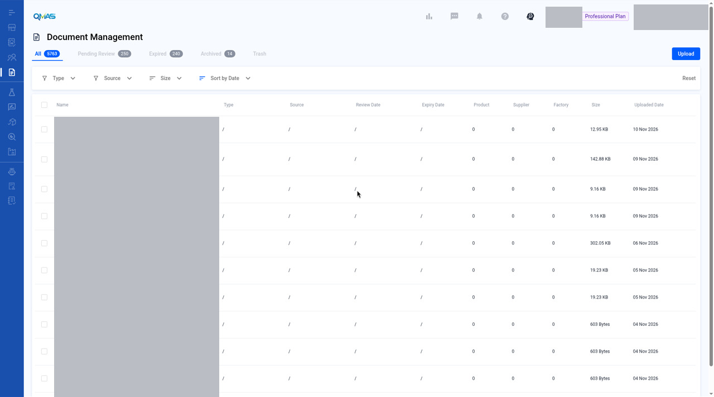

Document Management — Upload a Document
Upload a compliance document, link it to products, suppliers or factories, set its dates and reminders, and add compliance data.
Screenshot slots: 1 reviewed and 5 pending privacy review.
Overview
- Open Document Management and click Upload, then choose one or more files from your computer.
- In Upload Document, choose the document Type.
- Save To: link the document to suppliers, factories or products.
- Dates & Reminder: set issue, expiry and review dates and an email reminder.
- Compliance Data: add test data, certificate data or other data. Click Confirm.
Step-by-step
1. Open Document Management
In the left menu, open Document Management. The tabs show All, Pending Review, Expired, Archived and Trash documents. Click Upload at the top right and choose your file.

2. Choose the document type
The Upload Document pop-up shows the file name. Click the pencil icon to rename it. Under Type, type or select a document type, for example Test Report.
Image pending privacy review
File name: 02-upload-modal.jpg
Reviewed replacement image not available yet. Follow the written steps above.
3. Save To — link the document
On the Save To tab, click Add Supplier, Add Factory or Add Product. Select the items in the pop-up and click Confirm. A document can be linked to several items. Click Remove to unlink one.
Image pending privacy review
File name: 03-save-to.jpg
Reviewed replacement image not available yet. Follow the written steps above.
4. Dates & Reminder
Set the Issue Date, Expiry Date and Review Date. Under Email Reminder, choose On Expiry Date, On Review Date or Custom to get an email reminder. Use Clear All Settings to start again.
Image pending privacy review
File name: 04-dates-reminder.jpg
Reviewed replacement image not available yet. Follow the written steps above.
5. Compliance Data
Click Edit next to Test Data, Certificate Data or Other to record the details from the document, such as test items and results or certificate numbers.
Image pending privacy review
File name: 05-compliance-data.jpg
Reviewed replacement image not available yet. Follow the written steps above.
6. Confirm
Click Confirm. QMAS shows a success message and the document appears at the top of the list, with its type and the number of linked products, suppliers and factories.
Image pending privacy review
File name: 06-uploaded.jpg
Reviewed replacement image not available yet. Follow the written steps above.
Tips
FAQ
- How do I upload a document?
- Go to Document Management (https://qmas.icw.io/document-management), click Upload, choose the file, set the Type, link it under Save To, then click Confirm.
- How do I get a reminder before a document expires?
- In the Upload Document pop-up, open Dates & Reminder, set the Expiry Date, then choose an Email Reminder option.
- Where can I see expired documents?
- Open the Expired tab in Document Management.
Help Center additions and remaining gaps
Help Center finding
There is no Help Center article for the Document Management module.
Upload, folders, share, and Set Reminder in the Product Information Pack are written against the product profile Document tab, not this module. See the Product Profile page. Do not copy those steps here as if they were Document Management module steps.
Remaining gaps
- Workflows for Pending Review, Expired, Archived, and Trash.
- Post-upload row toolbar (share, archive, download, rename, move). Needs a dev check on this module.
- Filters, search, and Export.
- Edit dates, reminder, or compliance after upload.
- The upload toast “Upload Document Succeed” is a filed bug. Keep neutral “success message” language until the UI is fixed.
Help Center reconciliation 2026-11-13 (HKT). Original Help Center not edited. This draft is not the public guide at the marconip2026 site. No Dify upload.